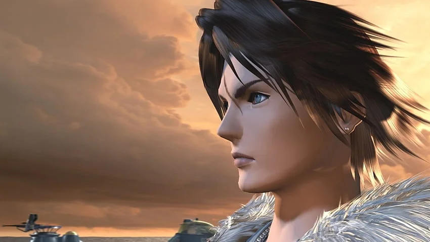
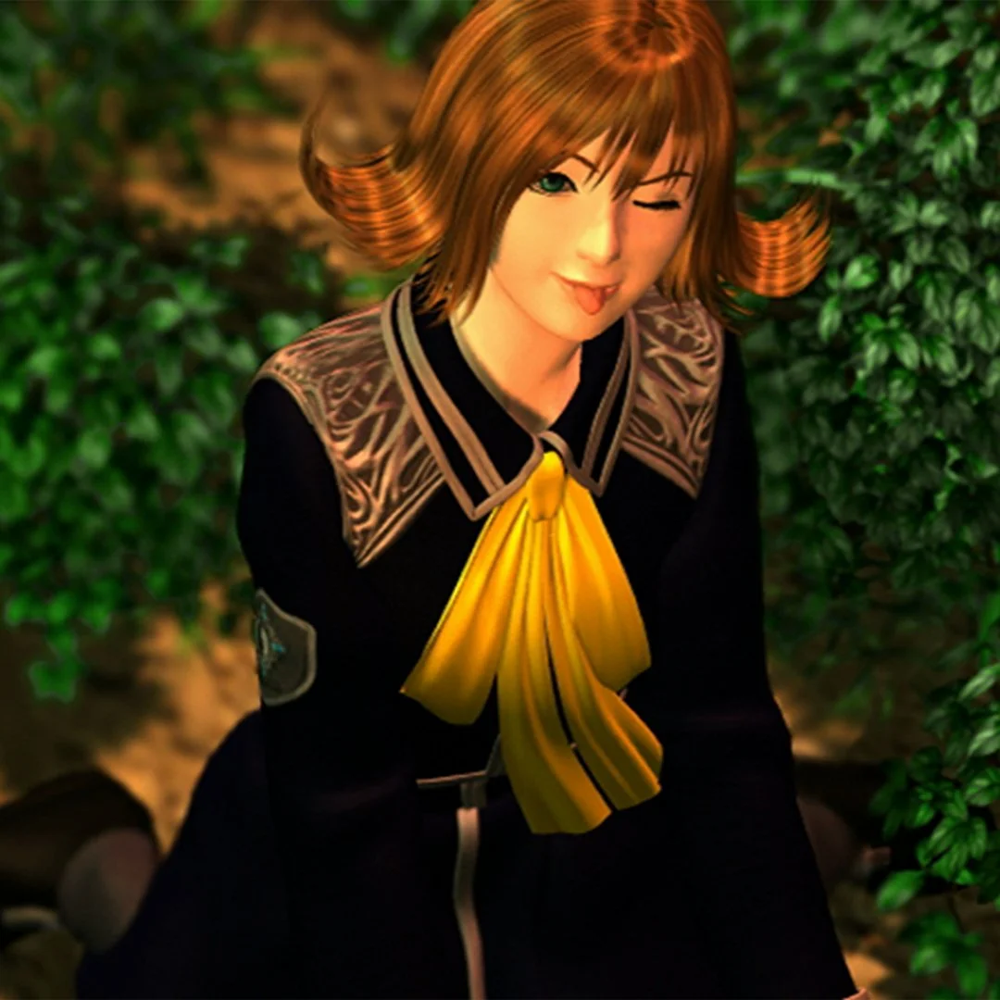
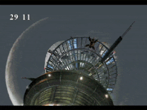
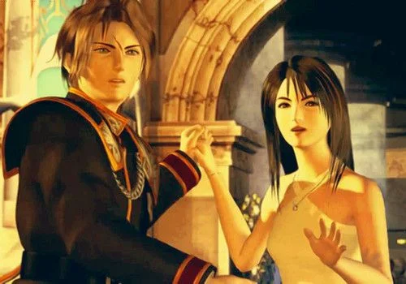

Dollet
Sube las escaleras, acaba con unos cuantos soldados de Galbadia, guarda la partida y avanza por las calles. Cuando Seifer te indique que busques enemigos, camina hacia el norte de la pantalla, tendrás que derrotar a otro soldado antes de poder continuar con las secuencias de la zona. Luego habla con Seifer un par de veces y espera a que termine la conversación. Tras cruzar el puente, tendrás que ir subiendo por el sendero de la montaña, ten cuidado porque te atacarán Venomas, unas serpientes venenosas considerablemente fuertes. Cuando hayas avanzado un poco, Seifer se irá y se unirá Selphie, recuerda enlazarle un G.F.. Puedes quedarte un rato entrenando con los monstruos, pero para avanzar tienes que entrar en la torre. Guarda la partida y sube en el ascensor.
MiniJefe - Biggs y Wedge
- Vida: 705 (ambos)
- Vulnerable: Nada
- Resistente: Nada
- Recompensa: Nada
- Extraccion: Piro, Electro, Hielo y Esna
- Estrategia: Para intentar vencerles con facilidad, puedes usar las invocaciones y ciertas magias como electro, que será la que más vida les quite. Con el ataque sencillo de Squall también bajarán sus puntos; así que lo recomendable es que Squall ataque sin más mientras Selphie y Zell utilizan las magias. Antes de poder vencerlos, algo raro pasará. Un huracán hará que los soldados dejen el campo de batalla y en su lugar aparezca un nuevo monstruo.
Jefe - Elviore
- Vida: 2872
- Vulnerable: Nada
- Resistente: Veneno
- Recompensa: Resucitador G.F
- Extraccion: Electro, Cura, Doble y G.F Sirena
- Estrategia: Si los Guardianes de la Fuerza están en un nivel considerable (se consigue no huyendo en los combates), no habrá ningún problema para vencer al monstruo. Lo primero que deberías hacer es Extraer el G.F. Sirena (si no lo haces ahora ya no lo podrás hacer en el resto del juego). Elviore puede quitar fácilmente de un solo ataque 150 puntos de vida, pero Squall, Zell y Selphie pueden curarse en pleno combate. También le harán más daño aquellas magias que hayas enlazado.
Al derrotarle, entre otras cosas, conseguirás la revista "Armas" marzo. Más adelante vamos con ella. Por lo pronto, enlaza a Sirena para que vaya consiguiendo puntos y baja por el ascensor. al salir de la torre, nos atacara una araña robotica enviada por Biggs, X-ATM092 ,A partir de este momento tienes media hora para regresar a la playa por ordenes de Quistis, escapando de este enemigo, derribandolo y escapando (repitiendo esta secuencia hasta llegar) o derrotandolo, que te dara puntos de SeeD extra y muchos Puntos de Experiencia para los G.F.
Jefe Opcional - X-ATM092
- Vida: 5770
- Vulnerable: Electro
- Resistente: Veneno
- Recompensa: (25% de obtener 1 de los 4) Power Wrist / Orihalcon / Hypno Crown / Force Armlet
- Extraccion: Piro, Hielo, Cura, Coraza
- Estrategia: Mediante la combinación de Doble (extraible de Elviore) + Electro, junto a la invocación Quetzal, podremos tumbar al X-ATM092 facilmente, una vez que este caido reparandose podemos huir hacia la playa y repetir esto cada vez que se cruce o esperar a llegar al puente (unico lugar donde se puede derrotar) y tumbarlo 5 veces tras cinco reparaciones por su parte, en la ultima en vez de repararse, explotara en 1000 pedazos
Verás una de las mejores secuencias del juego al llegar al punto determinado si decidiste no enfrentarte a este jefe, sino, simplemente te subiras al barco de retirada y estarás de nuevo en Balamb. Una vez llegues a la ciudad de nuevo, ve al Jardín de Balamb (no pierdas el tiempo entrenando por ahora, ya te explicaremos por qué). Ve por el único camino disponible para rodear el anillo de la fuente, veras una secuencia. Agarra el ascensor y ve al pasillo para esperar a que tenga lugar otra secuencia.
Una vez acabada la ceremonia habla con el director para recibir el Registro de batalla. Tu rango SeeD variara depende tus acciones hasta este momento, las mas importantes ya son definidas en esta guia. Ve por el único camino posible hasta acabar en tu cuarto. Tienes que cambiarte de ropa para ver la famosa escena del baile.
Después de las conversaciones tendrás que ir a la zona de entrenamiento con Quistis (es el pasillo de la franja verde del anillo de la fuente). Guarda la partida antes de entrar. Hay Arqueosaurios en esta zona y son letales, si eres nuevo en el juego, huye, sino, puedes enlazar la magia Morfeo asi tus ataques duermen al Arqueosaurio y terminarlo invocando principalmente a Shiva, ya que, es debil al hielo, luego de unos minutos, caera. Luego, simplemente ve hasta el fondo de la Zona de Entrenamiento, y cruza la puerta iluminada que verás en la parte superior de la pantalla, junto a un punto de guardado. Tras la charla, abandona la zona y tendrá lugar otro combate con un jefe.
Jefe - Yuruba
- Vida: 1510
- Vulnerable: Viento
- Resistente: Nada
- Recompensa: Piedra de Magox4
- Extraccion: Morfeo, Tiniebla, Escudo
- Estrategia: no hay gran cosa que destacar de este combate, de hecho puedes ventilar todo el problema con una única invocación de Shiva.
Luego de derrotarlo, salvaras a esta misteriosa Joven que conoceremos mas en profundidas mas adelante en el juego. Abandona la zona de entrenamiento, ve a tu dormitorio y muy pronto recibirás una misión con tus nuevos compañeros de equipo, deberas ir Hacia Timber
SIGUIENTE: HACIA TIMBER
ANTERIOR: JARDIN DE BALAMB